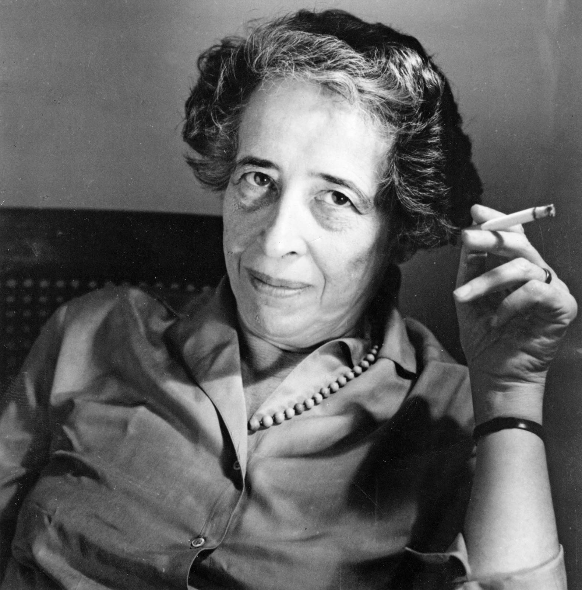

Hannah Arendt
German-American philosopher and political theorist

Arendt in 1963
- Johanna "Hannah" Cohn Arendt (/ˈɛərənt, ˈɑːr-/,[11][12][13] also US: /əˈrɛnt/,[14] German: [ˈaːʁənt];[15] 14 October 1906 – 4 December 1975), also known as Hannah Arendt Bluecher, was a German-American philosopher and political theorist. Her many books and articles on topics ranging from totalitarianism to epistemology have had a lasting influence on political theory. Arendt is widely considered one of the most important political philosophers of the twentieth century.
- Arendt was born in Hanover, Germany but mostly raised in Königsberg in a secular merchant Jewish culture by parents who were politically progressive, being supporters of the Social Democrats. Her father died when she was seven, so she was raised by her mother and grandfather. After completing her secondary education, she studied at the University of Marburg under Martin Heidegger, with whom she had a brief affair, and who had a lasting influence on her thinking. She obtained her doctorate in philosophy in 1929 at the University of Heidelberg with Karl Jaspers. Hannah Arendt married Günther Stern in 1929, but soon began to encounter increasing antisemitism in 1930s Nazi Germany.
- Adolf Hitler came to power in 1933, and while researching antisemitic propaganda for the Zionist Federation of Germany in Berlin that year, Arendt was denounced and briefly imprisoned by the Gestapo. On release, she fled Germany, living in Czechoslovakia and Switzerland before settling in Paris. There she worked for Youth Aliyah, assisting young Jews to emigrate to Palestine. Divorcing Stern in 1937, she married Heinrich Blücher in 1940, but when Germany invaded France in 1940 she was detained by the French as an alien, despite having been stripped of her German citizenship in 1937. She escaped and made her way to the United States in 1941 via Portugal. She settled in New York, which remained her principal residence for the rest of her life. She became a writer and editor and worked for the Jewish Cultural Reconstruction, becoming an American citizen in 1950. With the publication of The Origins of Totalitarianism in 1951, her reputation as a thinker and writer was established and a series of seminal works followed. These included The Human Condition in 1958, as well as Eichmann in Jerusalem and On Revolution in 1963. She taught at many American universities, while declining tenure-track appointments. She died suddenly of a heart attack in 1975, at the age of 69, leaving her last work, The Life of the Mind, unfinished.
- Her works cover a broad range of topics, but she is best known for those dealing with the nature of power and evil, as well as politics, direct democracy, authority, and totalitarianism. In the popular mind she is best remembered for the controversy surrounding the trial of Adolf Eichmann, her attempt to explain how ordinary people become actors in totalitarian systems, which was considered by some an apologia, and for the phrase "the banality of evil". She is commemorated by institutions and journals devoted to her thinking, the Hannah Arendt Prize for political thinking, and on stamps, street names and schools, amongst other things.
If you have time, please check her wikipedia